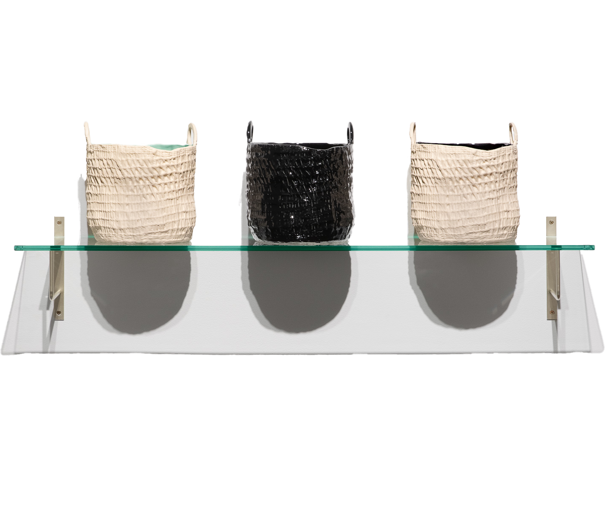
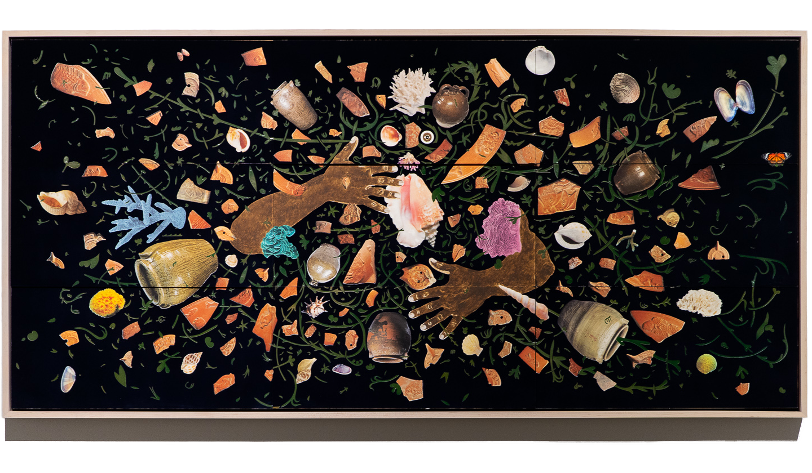
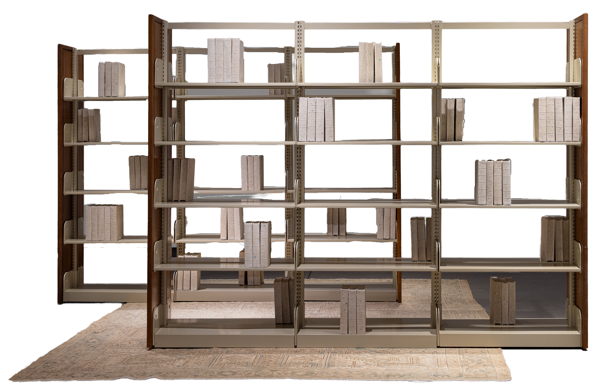
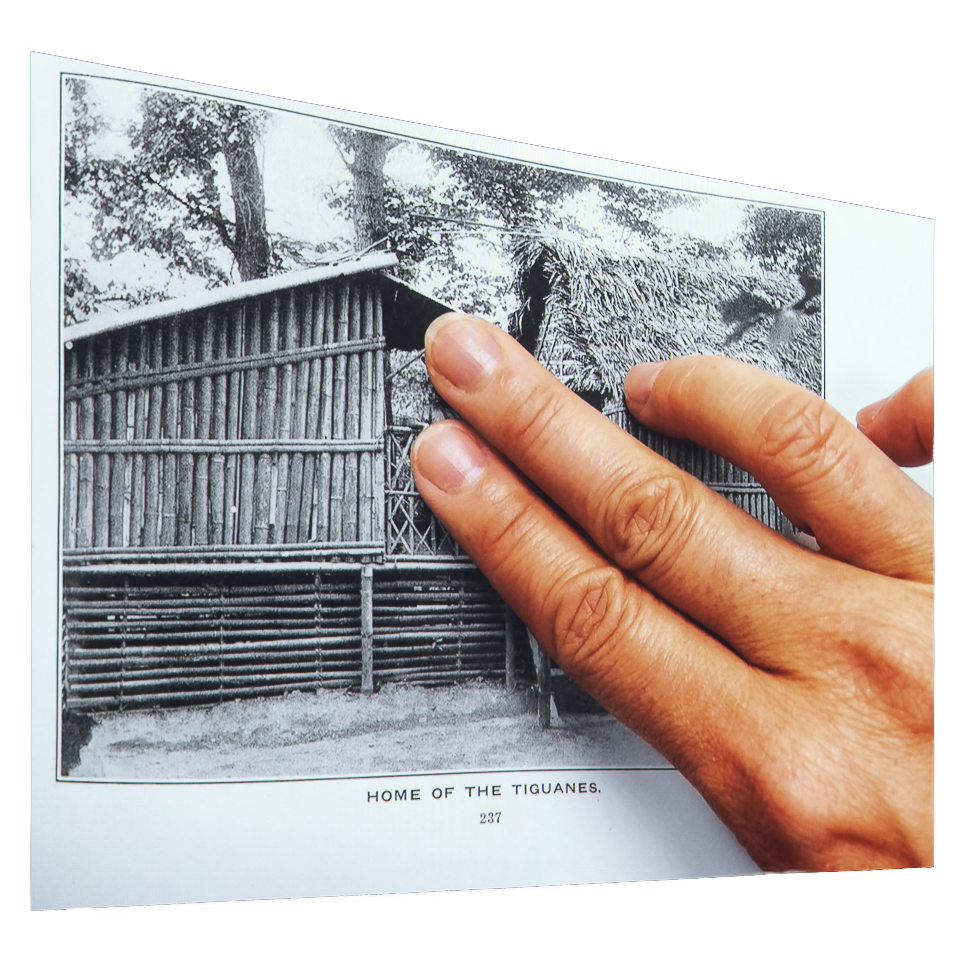
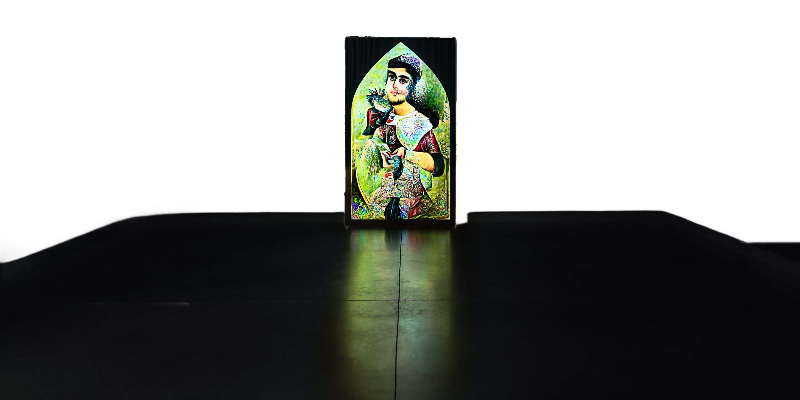

Objects & Power
October 4 – December 13, 2024

Sara Siestreem (Hanis Coos)
this clam basket stops pipelines, 2022
Why do we value the objects we value?
Gala Porras-Kim
Leaving the institution through cremation is easier than as a result of a deaccession policy,
2021
Objects and Power examines the systems surrounding collections, investigating
how history is told through
the acquisition, presentation, and interpretation of art, artifacts, and texts.
Nyeema Morgan
Soft Power. Hard Margins., 2020

William Villalongo
A Dance for Dave, 2023

The ten artists in the exhibition address varied topics that speak to how
objects relate to power, such
as the roots of collecting and museums; instances of extraction, theft, and erasure; themes of
Indigeneity, access, and ownership; and examples of artists and community groups telling stories
and
imbuing power to objects on their own terms.
Samuel Levi Jones, The Library of Alexandria, 2023.

Michael Rakowitz
May the obdurate foe not be in good health (Palmyrene funerary bust), 2020

Museums, libraries, and archives are repositories of objects and information that tell
narratives about
human history. While these organizations carry a weight of authority regarding art, artifacts, and
documents, institutions are not neutral; connections to wealth, conquest, and extraction are woven
throughout their holdings and infrastructure.

Stephanie Syjuco, Block Out the Sun, 2021.

Maya Tihtiyas Attean (member of the Penobscot Nation), Mikwidahamin/Portal, 2024.
While many institutions are doing work to confront the complicated provenance within their
collections,
Objects and Power features contemporary artists who consider these problems in their work—either
directly or by circumvention. Be it through unpacking and critiquing power structures or through
material directly carrying power in resistance, Objects and Power connects the dots between the objects
we care about and the “work” these objects are doing.
Morehshin Allahyari
ماه طلعت Moon-faced, 2022

Credits
Objects and Power reflects continued conversations, within and
beyond
the ICA at MECA&D, about
the
role
of art institutions and their inherent responsibilities. Many artists, historians, arts
administrators,
faculty, students, and community members have shared forms of knowledge about how objects
relate
to
power through their own work, shared conversation, and/or community action. Objects and
Power is
organized by Iris Williamson (Director of Exhibitions), Lyra Noumena ‘26 (Curatorial
Intern),
Sarah
Sawtelle ‘19 (Exhibitions Coordinator), Caroline Kouba ‘22 (Exhibitions Assistant); with
support
and
collaboration from freelance preparators and ICA Student Staff.
Thanks to MECA&D faculty collaborators including Rose Logie (Visiting
Assistant Professor, Academic Studies), Benjamin Spalding MFA '17 (Assistant Professor of
Sculpture & Foundation, Foundation Program Chair), sabine stxrm (Chair of Academic Studies
and
Associate Professor of Environmental Humanities), John Portlock (Assistant Professor of
Liberal
Arts and Chair of the Diversity Committee), Kyle Patnaude (Associate Professor,
Metalsmithing &
Jewelry) (among others); to MECA&D student collaborators including Francy HInds ‘25 and
Casey
Matȟó ‘25; and to the many MECA&D staff members for their support and contribution towards
the
exhibition. Many thanks to groups and individuals near and far for continuing to unpack
histories and to complicate our relationship with art and objects.
Generous support for the exhibition was provided through the Jeremy Moser
and Laura Kittle Fund.